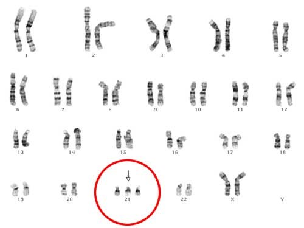
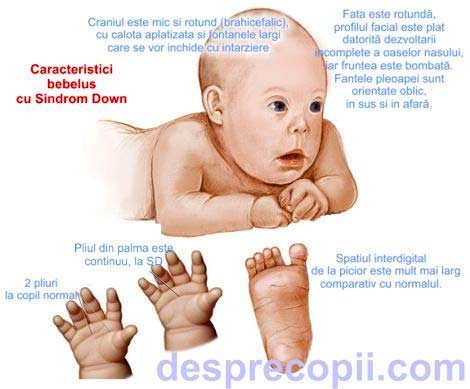
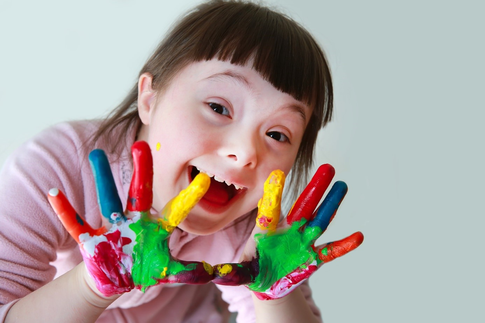

Genetica umană
Sindromul Down

Sindromul Down este o conditie dobandita prin nastere care presupune aparitia unui cromozon in plus fata de cei 46 care exista in mod normal in organismul uman.
Persoanele nascute cu sindrom Down au anumite trasaturi specifice, dar si anumite riscuri majore pentru o serie de boli si afectiuni.
Sindromul este insotit si de un grad mai mic sau mai mare de afectare in dezvoltarea mentala. Prezenta sindromului Down la viitorul bebelus poate fi depistata prin teste genetice, iar medicii geneticieni considera ca acestea ar trebuie facute de catre orice femeie insarcinata. Riscul de sindrom Down este mai mare la bebelusii mamelor cu varsta peste 35 de ani si in familiile unde exista persoane cu aceasta conditie.


De obicei sindromul Down este diagnosticat clinic în perioada neonatală sau la sugar, datorită dismorfiilor evocatoare care, deși variază la diferiți pacienți, realizează un aspect fenotipic caracteristic. Nou-născutul cu trisomie 21 are talia și greutatea sub limita normală corespunzătoare vârstei, hipotonie musculară, hiperextensibilitate articulară și reflex Moro redus sau absent, reflexul rotulian este slab.
Nou-născutul prezintă craniul mic și rotund (brahicefalic), cu occiput aplatizat și fontanele largi care se vor închide cu întârziere. Fața este rotundă, profilul feței este plat din cauza hipoplaziei oaselor proprii ale nasului, iar fruntea este bombată. Fantele palpebrale sunt orientate oblic, în sus și în afară. Aproximativ jumătate dintre pacienți prezintă epicantus.